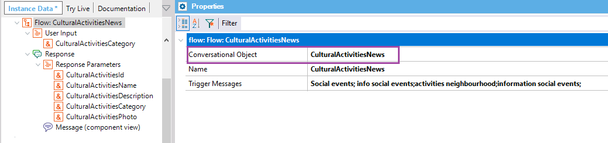
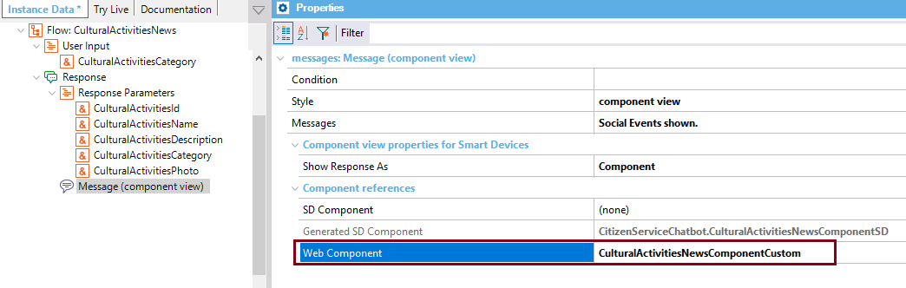

Web component that shows the response. If the property value is empty, a default Web component will be generated, considering the response parameters of the flow. Its name is given in the Generated Web component property. If the property value is not empty, and it is assigned to any custom Web component, you have to call the Conversational Object in the Start event of your Web component. Description
Allows determining the Web component that will be used to show the response, when the Message Action property is set to Component View. The property value can be left empty, which means that the component will be generated automatically, based on the Response Parameters of the Chatbot Response node. The Generated Web Component property determines the name of the auto-generated component. This component should not be changed, as it is generated every time the Conversational Flows object is generated or built. On the other hand, if you need to customize the Web component shown at response time, you can create your own and configure the Web component property with that value. The Component must meet the following requirements:
So, the Web component is like an intermediary object which receives the Input parameters, calls the Conversational object, and displays the results. Samples
Consider the following example where the Conversational Object property of the Flow is a Data Provider.  In the Chatbot Message node, the Message Action property is set to "Component view", and the Web Component property is set to "CulturalActivitiesNewsComponentCustom" which is the web component that will be shown after the user enters all the user inputs.  "CulturalActivitiesNewsComponentCustom" contains the following in the Start Event, which is a call to the Conversation Object of the Flow.
Event Start
&CulturalActivitiesNew = CulturalActivitiesNews(&CulturalActivitiesCategory)
Endevent
Note that the &CulturalActivitiesCategory parameter should be received by the Web Component, and it's the User input (received by the CulturalActivitiesNews Data Provider). So, the parm rule of "CulturalActivitiesNewsComponentCustom" is as follows: parm(in:&CulturalActivitiesCategory); AvailabilityThis property is available since GeneXus 15 upgrade 12. Scope Objects: Conversational Flows See Also
|
| Backlinks | |
| Chatbot Message | Chatbots Collection property |
| Conversational Object property | Generated Web Component property |